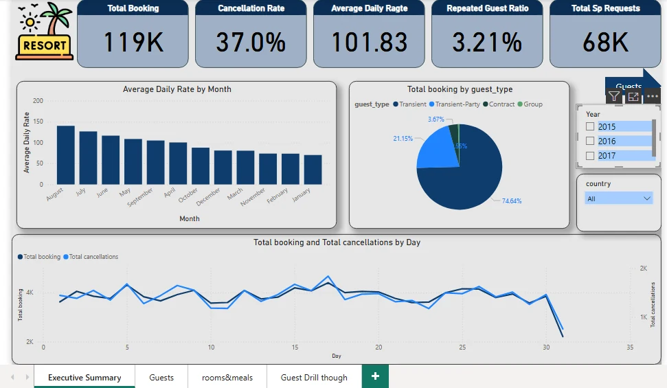

Power BI

ORIGINAL PROJECT ARTIFACTHospitality / Business intelligence
Hotel Booking Analysis Dashboard
A three-page view of booking patterns, guests and room preferences. Built to make a dense hotel dataset easier to explore.
Read the case study